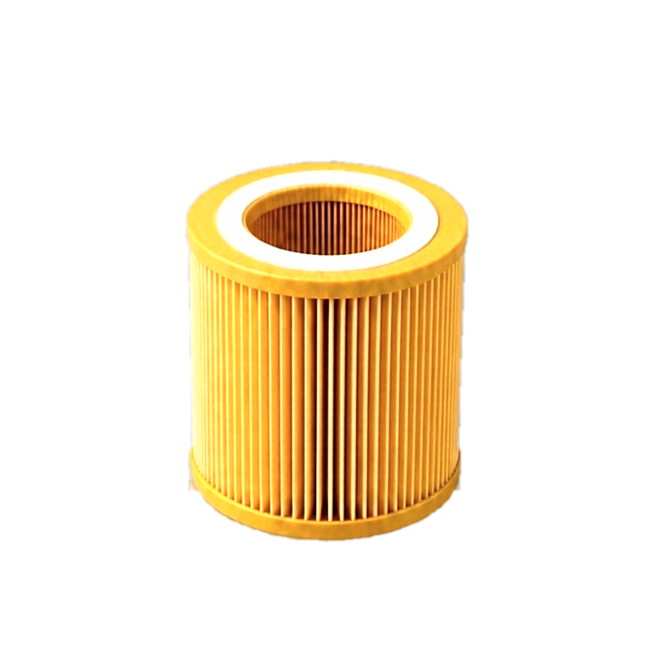
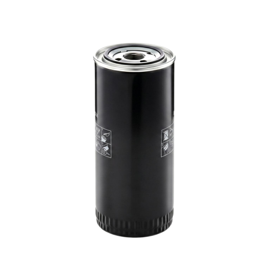
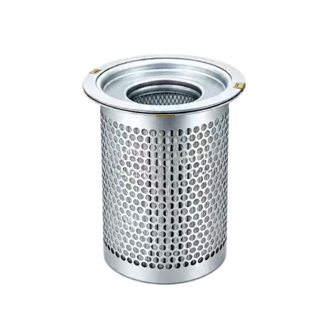
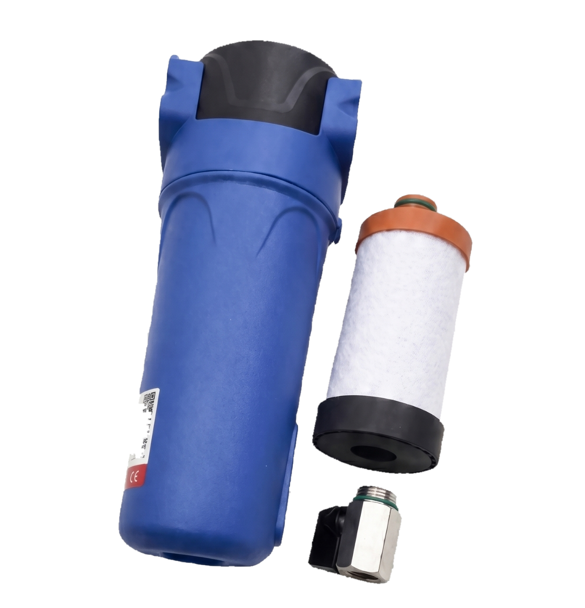

ACSP Catalog
Фильтры и сепараторы
Выберите нужный тип фильтрации для компрессорного оборудования.
Воздушные
защита компрессора от пыли
Масляные
очистка масла в системе
Сепараторы
отделение масла от воздуха
Магистральные
подготовка сжатого воздуха

Воздушные фильтры
Воздушный фильтр — это первый рубеж защиты воздушного компрессора, напрямую определяющий общую эффективность работы и срок службы машины.
Система воздушной фильтрации ACSP предназначена для улавливания мельчайшей пыли и примесей в воздухе, чтобы воздух, поступающий в компрессорный блок, был чистым и свободным от пыли.
Подробнее
Это позволяет предотвращать механический износ, преждевременное окисление смазочного масла и засорение маслоотделителя.
Технические преимущества
- Градиентная глубинная фильтрация: фильтрующий материал с переменным размером пор последовательно улавливает частицы пыли разного размера.
- Высокая воздухопроницаемость: фильтр сохраняет хорошую пропускную способность при низком перепаде давления.
- Адаптация к сложным условиям: для высокой запылённости, влажности и перепадов температур используются усиленные материалы.


